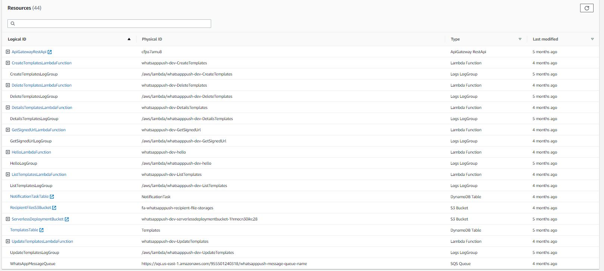

Repo
https://github.com/fabiux76/WhatsAppPush
Creazione di progetto serverless
serverless create --template aws-nodejs --path WhatsAppPush
In realtà esiste anche il template aws-nodejs-typescript. Vedi capitolo a parte per approfondimento su questo.
L'approccio che ho preso in questo caso è di trasformarlo da javascript
Gestione dei parametri di configurazione e delle variabili d'ambiente
Environment variable defined under the provider block is accessible in all lambda functions defined for WhatsAppPush.
Check su tipi anche senza typescript
Sembra si possa fare (su Visual studio code?= mettendo questo commento nel file
// @ts-check
cfr. here
Transition to typescript
Questo è il commit che fa la transazione su typescript
Passi:
- Ho creato un tsconfig.json
- Ho sostituito la dependency aws-sdk con @types/aws-lambda
- Ho aggiuto queste devDependencies:
json
"devDependencies": {
"@types/hapi__joi": "^17.1.7",
"@types/node": "^13.13.5",
"@types/uuid": "^8.3.1",
"aws-sdk": "^2.1013.0"
}
- Nel serverless.yml riferosco la funzione nella cartella build
- I file da .js diventano .ts ed annoto parametri, variabili
Ma il build come lo faccio?
Validazione della richiesta
La validazione del body la facciamo con joi
const schema = Joi.object({
template_name: Joi.string().required(),
template_message: Joi.string().required()
});
const { error, value } = schema.validate(requestBody);
if (error) {
return handleError(HttpStatus.BAD_REQUEST,
`[Template:Create:Error]:${HttpStatus[HttpStatus.BAD_REQUEST]}:${error}`);
}
Comandi serverless
I comandi possono prendere come opzioni:
- --stage or -s The stage in your service you want to display information about.
- --region or -r The region in your stage that you want to display information
Deploy
serverless deploy
Verifica dello stato del servizio
serverless info --verbose
PErò anche nella modalità verbose non si vedono tutte le risorse che invee si vedono sulla console
λ serverless info --verbose
Service Information
service: whatsapppush
stage: dev
region: us-east-1
stack: whatsapppush-dev
resources: 44
api keys:
None
endpoints:
POST - https://cfjss7amu8.execute-api.us-east-1.amazonaws.com/dev/templates
PUT - https://cfjss7amu8.execute-api.us-east-1.amazonaws.com/dev/templates/{user_id}/{template_id}
DELETE - https://cfjss7amu8.execute-api.us-east-1.amazonaws.com/dev/templates/{user_id}/{template_id}
GET - https://cfjss7amu8.execute-api.us-east-1.amazonaws.com/dev/templates/{user_id}/{template_id}
GET - https://cfjss7amu8.execute-api.us-east-1.amazonaws.com/dev/templates/{user_id}
POST - https://cfjss7amu8.execute-api.us-east-1.amazonaws.com/dev/upload-url/{user_id}
POST - https://cfjss7amu8.execute-api.us-east-1.amazonaws.com/dev/notification
functions:
CreateTemplates: whatsapppush-dev-CreateTemplates
UpdateTemplates: whatsapppush-dev-UpdateTemplates
DeleteTemplates: whatsapppush-dev-DeleteTemplates
DetailsTemplates: whatsapppush-dev-DetailsTemplates
ListTemplates: whatsapppush-dev-ListTemplates
GetSignedUrl: whatsapppush-dev-GetSignedUrl
CreateNotification: whatsapppush-dev-CreateNotification
hello: whatsapppush-dev-hello
layers:
None
Stack Outputs
WhatsAppMessageQueueURL: https://sqs.us-east-1.amazonaws.com/955501240318/whatsapppush-message-queue-name
ServiceEndpoint: https://cfjss7amu8.execute-api.us-east-1.amazonaws.com/dev
ServerlessDeploymentBucketName: whatsapppush-dev-serverlessdeploymentbucket-1hmecn30ikc28
Da console vedo questo: 
Cancellazione
serverless remove
Test locale
Invocazione diretta delle funzioni
Es:
serverless invoke local --function CreateNotification --path test\CreateNotificationPayloadSingle.json
Compilazione
Per trasformare da javascript a typescript, vado nella root del progetto (dove c'è il tsconfig.jsone faccio semplicemente:
tsc
Per capire meglio come gestire typescript con vscode è sicuramente utile leggersi questo tutorial
Debug
Info qui: - VSCode doc
Step 1: Sono riuscito a fare un primo passo. Debuggare sul codice javascript (non typescript). Per fare questo è dovuto installare localmente al progetto serverless (non global) ed ho anche dovuto aggiornare la versione a 3 del serverless.yaml
Poi usato creaa la launch configuration puntando program a ${workspaceRoot}/node_modules/serverless/bin/serverless.js
Non ho ancora capito però dove va a mettere l'outpur (immagino che se chiamo serverless da cli mi stampa la risposta di default mentre così no)
MA bisogna ancora fare tanto: - Dove trovo gli output? - C'è però il problema di come debuggate typescript!!!!! - L'ideale sarebbe poter dire a serverless di usare direttamente typescript! Forse in questo caso si riesce a debuggare bene - Poi sarebbe interessante investigare anche come usare questo plugin: serverless offline
Client
Per testare il caricamento di file da client web mi ero fatto un progetto parallelo con react
La faccio partire con npm start e funziona ancora :)
Collezione Postman per le prove
...
Dubbi
- Com'è che facevo la build??? ts-node? poi serverless...
- Non ho capito l'uso dell'idempotentkey. Sostanzialmente è una chiave usata epr evitare inserimenti duplici... Non si poteva usare un id di dynamo?
- ci sono diversi
as anynella chiamata a dynamodb che non mi piacciono. Sicuramente si può fare qualcosa...VERIFICARE - Anche questo
process.env.DDB_TEMPLATES_TABLE_NAME || ""va sistemato - Sistemare anche
getSignedUrlPromiseparametro not typed - Avevo fatto anche dei file di test .json. Come la facevo l'invocazione? con qualcosa tipo
serverless invoke local --function functionName --path lib/data.json